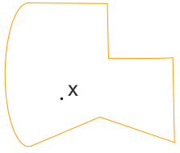
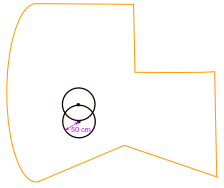
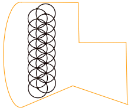
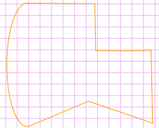

Activity: Tomatoes for the Garden
How many tomato plants can fit into your garden?
And, if all the conditions for growth are right, what is your expected yield?
This depends on:
- The size of your garden
- How close together you plant the tomato plants
Plant them too close and they won't grow well, so you will need to spread them out.
You could find out the best distance between plants from a gardening book, or the internet.
And it may depend on the variety of tomato, so make sure you do your research first.
Your first step is to find the shape of your garden and plot it on a sheet of paper.
You can do the Garden Area activity first if you want
As an example, suppose they must be planted 50cm apart,
How could they best fit into the example garden below?

If you plant one tomato plant at random in the garden, say at point X, then where do you plant the next one?
It has to be at least 50cm away, so it could be anywhere on the circumference of the circle of radius 5ocm, like this:

Choose any spot on the circle, then draw another circle ... like this:

Continue on like that ...

Just make sure each plant is no closer than 50cm to any other one.
That was just one way ... not even a good one, as there is wasted space along the edge of the garden.
So hopefully you can do better.
Here are some ideas:
- Pick a good starting position (in other words, where do you place point X?)
- Is it better to start measuring from one edge of the garden? But then, not all edges are straight, so which edge should I choose?
- Maybe a grid will help, like this one:

Keep each of your attempts, it is interesting to see how you can improve on your plan.
Good Luck!
What is your expected yield?
Once you've decided on how many plants you can fit into your garden, then you can work out the expected yield of tomatoes from your garden. That's a simple multiplication.
For example, I estimate that I can plant 200 tomato plants in my garden and the expected yield per plant is 5 kg.
So I expect the total yield to be about 200 × 5kg = 1,000kg or 1 tonne!
And, if I sell my tomatoes for $2 a kilogram, then I'm on to a winner. Perhaps this is a better choice than having a lawn in my back garden!
But what about the cost of fertiliser and insecticides and all the time it takes to nurture those tomatoes?
Well, that's another story ... you can work all that out!
Follow Up
Instead of planting tomatoes, what about having a barbecue party for your friends?
But how many friends could you invite to your party without the garden being overcrowded?
Just use the same method!
Except the plants are replaced by people, and maybe they should be two meters apart instead of 50 centimeters. But the idea is the same.